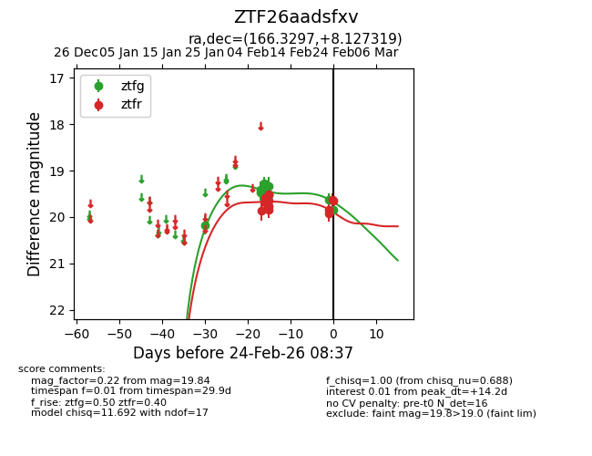
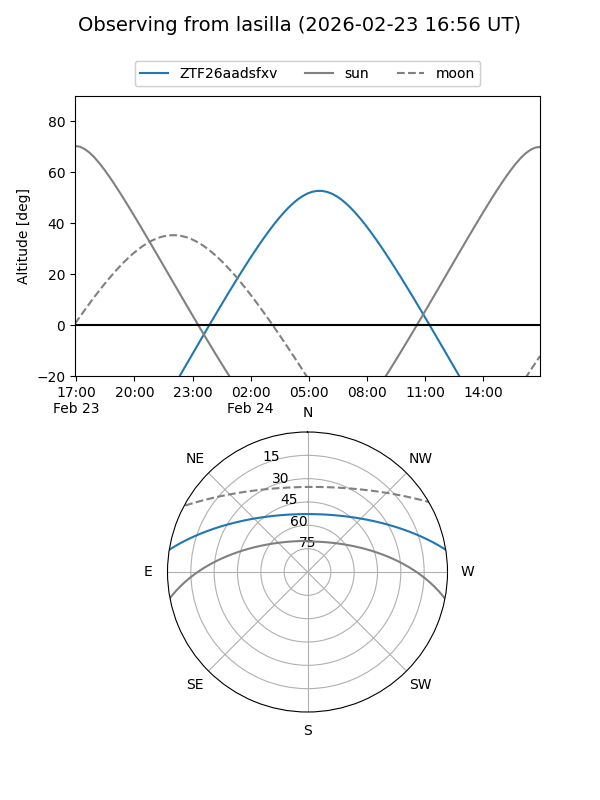
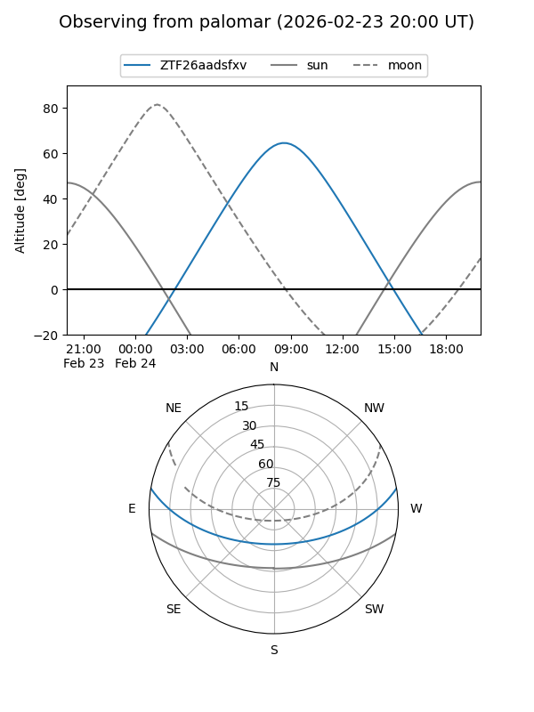

ZTF26aadsfxv
Target ZTF26aadsfxv at 2026-02-24 09:08
Aliases and brokers:
FINK: link
Lasair: link
ALeRCE: link
alt names
ZTF26aadsfxv (ztf,fink_ztf)
Coordinates:
equatorial (ra, dec) = 166.3297,+8.12732
equatorial (HMS+DMS) = 11:05:19.13,+08:07:38.35
galactic (l, b) = (245.0946,+58.51103)
Flags:
Photometry:
last ztfg=19.84, ztfr=19.65
11 ztfg, 11 ztfr detections
Lightcurve

Visibility


Additional plots